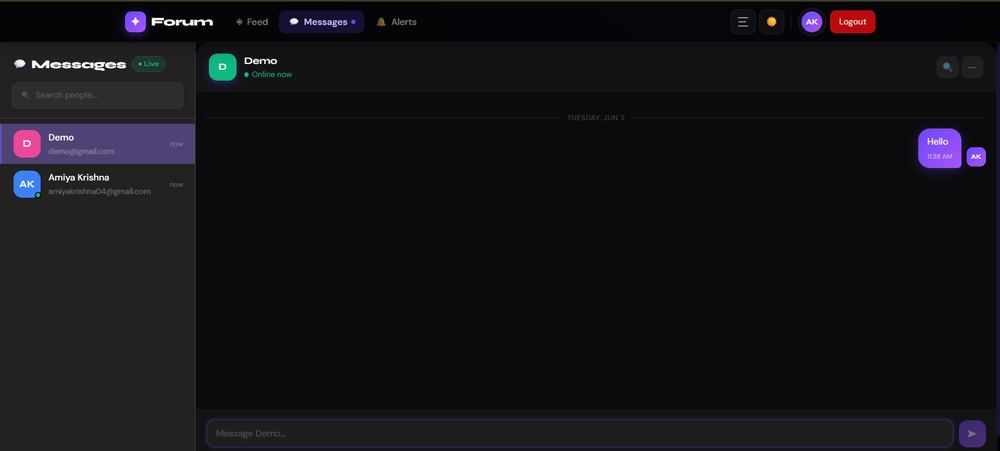
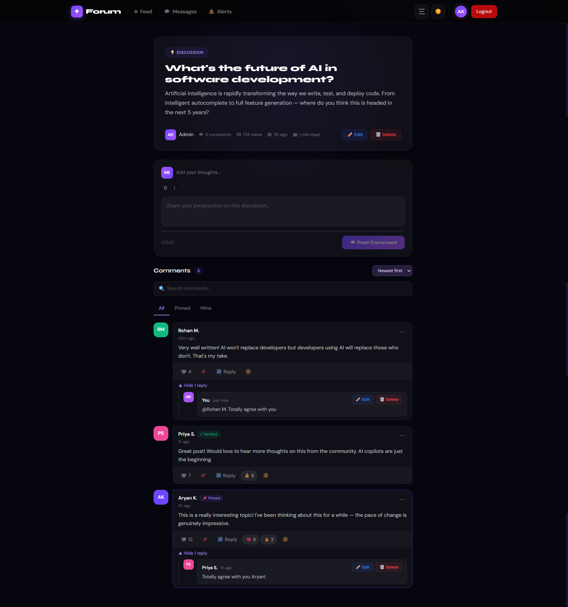

🟢 Built & feature-complete — live demo deploying
Real-Time Discussion Platform (WebSocket Architecture)
A MERN + Socket.IO platform merging persistent threaded discussions with real-time chat — presence, typing indicators, mentions, and DB-persisted notifications.

Problem
Online communities are usually forced to pick one: slow-paced threaded discussions, or fast real-time chat. Splitting the two across separate tools kills engagement and context.
Solution
Built a MERN + Socket.IO platform that merges both worlds in one app — persistent discussion threads with comments live alongside real-time messaging, so a conversation can start async and move to live chat instantly.
Features
- 15+ REST APIs across Auth, Posts & Notifications
- JWT authentication with bcrypt password hashing
- Socket.IO — live chat, typing indicators & online presence
- Real-time notifications for replies, mentions & messages persisted to the DB
- Multi-emoji reactions, rich text posts, image uploads (Multer), @mentions with autocomplete
- Infinite scroll — feed loads in pages of 8 instead of fetching everything at once
Architecture
- Express REST API and a Socket.IO layer run side by side in the same Node process, sharing auth/session context
- MongoDB + Mongoose schema design across Users, Posts, Comments & Notifications collections
- Role-based authorization middleware guards protected routes on both REST and socket events
- Uploaded images served from
server/uploadsvia Multer in dev — repo explicitly flags this needs to move to S3/Cloudinary for production since free-tier hosts use ephemeral disks
Technology Stack
Challenges
- Infinite scroll (paged fetch of 8) instead of loading the full feed, to keep initial payloads small as post volume grows
- Socket.IO falls back to HTTP long-polling when WebSocket transport isn't available
- Notification documents carry a type + link back to the source post, so read/unread state persists across sessions instead of living only in memory
- Known scaling gap called out directly: local-disk image storage won't survive redeploys on ephemeral hosts — next step is swapping in object storage
Results / Impact
15+
REST Endpoints
4
Mongo Collections
6
Emoji Reactions
8
Posts / Page

